INFOLANDYN project
Whats is?
INFOLANDYN is an "information system designed to monitor global change impacts by modeling land cover dynamics based on high added value indicators" derived from remote sensing time series. The system provides clear and objective products at different scales, including phenological and dynamics indicators, forecasting models, and climate impact indicators. Additionally, INFOLANDYN generates analysis and reports to support sustainable natural resource management and policy-making.
Period: September 2021-August 2024
Project PID2020-115509RB-I00 funded by MCIN/AEI/ 10.13039/501100011033 (Call 2020 – « I+D+i Projects»)
In the current context of global change, a wide and deep knowledge on land surface dynamics at large scales is crucial to understand biosphere-atmosphere interactions, to make climate predictions and to manage natural resources and agricultural lands helping to ensure food security. The INFOLANDYN project is an initiative of the Research Group Geo-Qubidy of the “Universidad Politécnica de Madrid” (UPM), Spain, working in close collaboration with researchers from the “Universidad Rey Juan Carlos” (URJC). The project aims to design and implement an Information System to generate remote sensing products that help understand the dynamics of the earth's surface in the context of global change. Phenological and dynamic indicators and products will be developed, and analyses and reports will be generated to communicate the results to end-users. The structure of the project will include elements such as system design, identification of indicators and products, data and product management, results analysis, and communication of findings.
How is the INFOLANDYN structured?
The aim of this project is to design and implement an Information System to develop and make available objective, succinct and clear products of land surface dynamics derived from remote sensing time series at several scales. The products developed will contain ecological meaning providing essential information to assess global change impacts. These products will be easily revised and updated so that operability will be guaranteed.
Work Flow with related Products
What products are included?
The type of products proposed includes phenological and dynamics indicators such as: (1) vegetation intra-annual dynamics defined by phenological cycles, (2) type and persistence of inter-annual patterns (3) presence of trends in the vegetation indexes time series, (4) presence of structural changes, (5) forecasting models, (6) onset, end, and length of growing season (7) dynamics assessment based on phenological metrics and (8) indicators related to climate impacts.
What level of information is included
The land surface dynamics information system will provide cartographic products at two levels: the first level will show general attributes of vegetation index time series based on statistical and phenological methods, while the second level will display environmental information related to land surface processes. The system will also generate analysis and reports to support sustainable natural resource management and policy-making.
INFOLANDYN Advantages
The platform is easy to use, intuitive and scalable to any region or type of land cover. INFOLANDYN integrates the different applications used to manage land use dynamics, streamlining the analysis and reporting processes. Some of the advantages offered by the system are:
- Contributing to understanding the dynamics of the earth's surface in the context of global change, which would enable informed decision-making in the management of natural resources and adaptation to climate change.
- Providing objective, concise, and clear products of the earth's surface dynamics at various scales, which would be easily reviewable and updatable, ensuring their operability.
- Developing phenological and dynamic indicators that provide essential information for assessing the impacts of global change, which would allow for a better understanding of how our planet is changing.
- Generating analyses and reports that communicate the results to end-users, which would help disseminate the project's findings and promote their use for informed decision-making.
- Contributing to food security by providing relevant information for the management of agricultural lands.